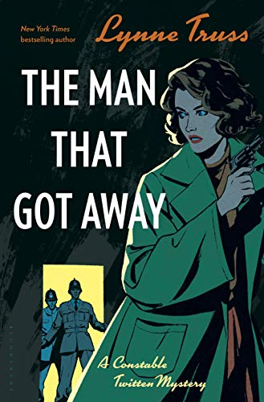

How To is an instruction manual for taking everyday problems and using science and creative thinking to turn them into much bigger and more exciting problems. It teaches you how to cross a river by boiling it, outlines some of the many uses for lava around the home, and walks you through how to use experimental military research to ensure that your friends will never again ask you to help them move.
How To is an instruction manual for taking everyday problems and using science and creative thinking to turn them into much bigger and more exciting problems. It teaches you how to cross a river by boiling it, outlines some of the many uses for lava around the home, and walks you through how to use experimental military research to ensure that your friends will never again ask you to help them move.
How To: Absurd Scientific Advice for Common Real-World Problems
by Randall Munroe
by Randall Munroe
Kevin Kwan, bestselling author of Crazy Rich Asians and China Rich Girlfriend, is back with an uproarious new novel featuring a family driven by fortune, an ex-wife driven psychotic with jealousy, a battle royal fought through couture-gown sabotage, and the heir to one of Asia's greatest fortunes locked out of his inheritance.
Rich People Problems
(Crazy Rich Asians #3)
by Kevin Kwan
(Crazy Rich Asians #3)
by Kevin Kwan
Gary Janetti, the writer and producer for some of the most popular television comedies of all time, and creator of one of the most wickedly funny Instagram accounts there is, now turns his skills to the page in a hilarious, and poignant book chronicling the pains and indignities of everyday life.
Do You Mind If I Cancel? (Things That Still Annoy Me)
by Gary Janetti
by Gary Janetti
In Embrace Your Weird, New York Times bestselling author, producer, actress, TV writer, and award-winning web series creator, Felicia Day takes you on a journey to find, rekindle, or expand your creative passions.
Embrace Your Weird: Face Your Fears and Unleash Creativity
by Felicia Day
by Felicia Day
Twas The Nightshift Before Christmas is the hilarious, poignant and entertaining story of the life of a junior doctor at the most challenging time of the year. With twenty-five tales of intriguing, shocking and incredible Christmas incidents, the British public will finally appreciate the sacrifices made and the challenges faced by the unsung heroes of the NHS.
Twas The Nightshift Before Christmas
by Adam Kay
by Adam Kay
In Wrecking Ball, Book 14 of the Diary of a Wimpy Kid series—from #1 international bestselling author Jeff Kinney—an unexpected inheritance gives the Heffley family a chance to make major improvements to their home. But they soon find that construction isn’t all it’s cracked up to be. When things get rough, will the Heffleys be able to stay . . . or will they be forced to move?
Wrecking Ball
(Diary of a Wimpy Kid #14)
by Jeff Kinney
(Diary of a Wimpy Kid #14)
by Jeff Kinney
Artist Celeste Cabot welcomes the chance to show her paintings at a craft fair in her hometown of Gatlinburg, Tennessee, where she and her Chihuahua, Van Gogh, can park her vintage Shasta trailer and sell her creations, too.
Murder Can Mess Up Your Masterpiece
(Haunted Craft Fair Mysteries #1)
by Rose Pressey
(Haunted Craft Fair Mysteries #1)
by Rose Pressey
 In the second instalment of Lynne Truss's joyfully quirky crime series, our trio of detectives must investigate the murder of a hapless romantic; an aristocratic con man on the prowl; and a dodgy Brighton nightspot...
The Man That Got Away
(Constable Twitten #2)
by Lynne Truss
(Constable Twitten #2)
by Lynne Truss